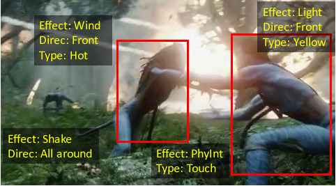

|
Henry (Yuhao) Zhou
I have recently finished my undergraduate study at
University of Toronto.
and joined Facebook AI Research as an AI Resident working with Michael Auli and Alexei Baevski on unsupervised speech pretraining.
As an undergraduate student, my focus of study are machine learning, software engineering and system control.
Since January in 2017, I have been working as an undergraduate research assistant under the supervision of
Prof. Sanja Fidler and
Prof. Jimmy Ba
on computer vison and reinforcement learning projects.
Before I worked as a research assistant, I primarily spent my time on various software engineering internships.
During which period, I gained strong coding skills through in-depth experience on large-scale engineering projects.
|

|
|
Address:
RM1801, 24 Wellesley St. West
Toronto, Canada. M4Y 2X6
|
Email:
henryzhou-at-cs-dot-toronto-dot-edu
henry-dot-zhou-at-mail-dot-utoronto-dot-ca
|
CV /
LinkedIn /
GitHub /
Google Scholar
|
Research
I am broadly interested in machine learning, deep learning and its application in computer vision, natural language processing, speech, and locomotion control.
(* Denotes equal contribution.)
|
|
|
Learning to Simulate Dynamic Environments with GameGAN
Seung Wook Kim, Yuhao Zhou, Jonah Philion, Antonio Torralba, Sanja Fidler
Computer Vision and Pattern Recognition (CVPR), 2020
Abstract /
Bibtex /
Project Web /
Live Demos
Media:
Nvidia Twitter /
Blog Post /
YouTube Explained /
Simulation is a crucial component of any robotic system. In order to simulate correctly, we need to write complex rules of the environment: how dynamic agents behave, and how the actions of each of the agents affect the behavior of others. In this paper, we aim to learn a simulator by simply watching an agent interact with an environment. We focus on graphics games as a proxy of the real environment. We introduce GameGAN, a generative model that learns to visually imitate a desired game by ingesting screenplay and keyboard actions during training. Given a key pressed by the agent, GameGAN "renders" the next screen using a carefully designed generative adversarial network. Our approach offers key advantages over existing work: we design a memory module that builds an internal map of the environment, allowing for the agent to return to previously visited locations with high visual consistency. In addition, GameGAN is able to disentangle static and dynamic components within an image making the behavior of the model more interpretable, and relevant for downstream tasks that require explicit reasoning over dynamic elements. This enables many interesting applications such as swapping different components of the game to build new games that do not exist. We implement our approach as a web application enabling human players to now play Pacman and its generated variations with our GameGAN.
@inproceedings{Kim2020_GameGan,
author = {Seung Wook Kim and Yuhao Zhou and Jonah Philion and Antonio Torralba and Sanja Fidler},
title = {{Learning to Simulate Dynamic Environments with GameGAN}},
year = {2020},
booktitle = {IEEE Conference on Computer Vision and Pattern Recognition (CVPR)},
month = {Jun.}, doi = {}}
|

|
Neural Graph Evolution: Automatic Robot Design
Yuhao Zhou*, Tingwu Wang*, Sanja Fidler, Jimmy Ba
International Conference on Learning Representations, 2019
Abstract /
Bibtex /
Open Review /
Codes /
Project Web /
Despite the recent successes in robotic locomotion control, the design of robot relies heavily on human engineering.
Automatic robot design has been a long studied subject, but the recent progress has been slowed due to the large combinatorial search space and the difficulty in evaluating the found candidates.
To address the two challenges, we formulate automatic robot design as a graph search problem and perform evolution search in graph space.
We propose Neural Graph Evolution (NGE), which performs selection on current candidates and evolves new ones iteratively.
Different from previous approaches, NGE uses graph neural networks to parameterize the control policies, which reduces evaluation cost on new candidates with the help of skill transfer from previously evaluated designs.
In addition, NGE applies Graph Mutation with Uncertainty (GM-UC) by incorporating model uncertainty, which reduces the search space by balancing exploration and exploitation.
We show that NGE significantly outperforms previous methods by an order of magnitude.
As shown in experiments, NGE is the first algorithm that can automatically discover kinematically preferred robotic graph structures, such as a fish with two symmetrical flat side-fins and a tail, or a cheetah with athletic front and back legs.
Instead of using thousands of cores for weeks, NGE efficiently solves searching problem within a day on a single 64 CPU-core Amazon EC2.
@inproceedings{
wang2018neural,
title={Neural Graph Evolution: Automatic Robot Design},
author={Tingwu Wang and Yuhao Zhou and Sanja Fidler and Jimmy Ba},
booktitle={International Conference on Learning Representations},
year={2019},
url={https://openreview.net/forum?id=BkgWHnR5tm},
}
|
|

|
Now You Shake Me: Towards Automatic 4D Cinema
Yuhao Zhou, Makarand Tapaswi, Sanja Fidler
Computer Vision and Pattern Recognition (CVPR), 2018 (Spotlight)
Abstract /
Bibtex /
Project Web /
PDF /
CVPR Spotlight /
Poster
Media:
UofT News /
CBC Radio News /
Inquisitr News
We are interested in enabling automatic 4D cinema by parsing physical and special effects from untrimmed movies.
These include effects such as physical interactions, water splashing, light, and shaking, and are grounded to either a character in the scene or the camera.
We collect a new dataset referred to as the Movie4D dataset which annotates over 9K effects in 63 movies.
We propose a Conditional Random Field model atop a neural network that brings together visual and audio information, as well as semantics in the form of person tracks. Our model further exploits correlations of effects between different characters in the clip as well as across movie threads.
We propose effect detection and classification as two tasks, and present results along with ablation studies on our dataset, paving the way towards 4D cinema in everyone's homes.
@inproceedings{Zhou2017_Movie4D,
author = {Yuhao Zhou and Makarand Tapaswi and Sanja Fidler},
title = {{Now You Shake Me: Towards Automatic 4D Cinema}},
year = {2018},
booktitle = {IEEE Conference on Computer Vision and Pattern Recognition (CVPR)},
month = {Jun.}, doi = {}}
|
|
Industry Experience
Please email me for more details of the experience.
|
|
Facebook AI Research
AI Resident
Menlo Park, CA
August, 2019 -
AI research team. Natural Language Processing and Speech Team.
Working with Michael Auli and Alexei Baevski on unsupervised speech pretraining algorithms.
|
 |
Nvidia Corporation
Research Intern
Toronto, Canada
January, 2019 - July, 2019
AI research team.
Under the supervison of Prof. Sanja Fidler and Prof. Antonio Torralba, working on Computer Vision projects.
Research project on Generative Adversarial Networks (GAN) and Game Simulation.
|
 |
Intel PSG
PEY (Professional Experience Year) Intern
San Jose, CA
May, 2017 - December, 2017
Participated in software development in Quartus high-level synthesis group.
Engaged in large-scale C++ programming projects on software backward compatibility.
Enhanced customers' usability to use pre-compiled products to compile on latest Quartus software. (Perl)
|
 |
Oracle Corp.
R&D Intern
Beijing, China
June, 2015 - Aug, 2015
Worked in R&D department cloud computing group.
Exposure to cloud-computing architecture and networking.
Utilized integrated tools to manage cloud-computing resources and services for the entire R&D department.
|
|
Projects
Some side/course projects I participated.
|
|
|
Towards a Practical sEMG Gesture Recognition System
Sebastian Kmiec*, Yuhao Zhou*
Supervisor: Stark Draper
University of Toronto 4th-year Capstone Project, 2019
John Senders Award (1 Team across all engineering disciplines' designs)
Selected as Distinction (Top 5% among the entire student groups).
Abstract /
UofT News /
Mid-term Presentation /
Poster /
Final Report Documentation /
In this project, we designed a real-time gesture recognition system for the purposes of transradial prostheses control.
Our system makes a step towards accessible prosthesis, with hardware that is both easy to install and inexpensive.
The focus of our project was to collect data from two Myo armband devices, and provide highly accurate and timely gesture prediction, from a large set of predefined gestures.
The midterm presentation updates the supervisor and project manager with progress.
The link to the slides are available here.
To avoid potential plagiarism, the final report of the project is available upon requests.
Thank you for the understanding.
|
|